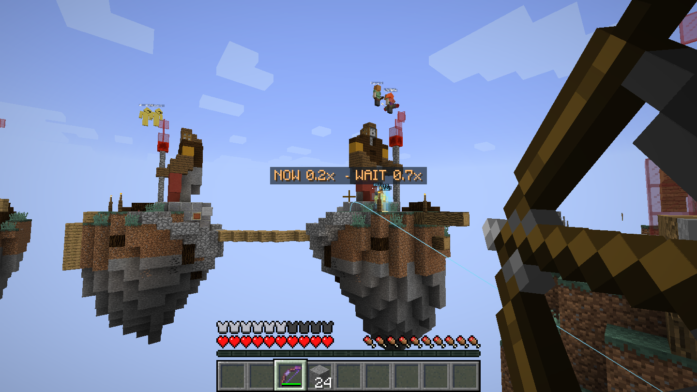

Predicting where a player will be when your arrow arrives
One of the coolest moments in Minecraft (and games in general) is when raw reflexes aren't enough—you genuinely have to predict your opponent. With a bow at 30+ blocks, the arrow takes half a second to get there. Straight-line aiming assumes players run off bridges into the void. I trained neural networks on 1.23 million ticks of real Hypixel BedWars and SkyWars gameplay to see how accurately you can actually predict real human movement—and when it's better to wait a split second for a void kill.
K=6 coherent movement modes) at arrow arrival time, color-coded by safe hit vs. void-kill opportunity (V), alongside the glowing ballistic arc and expected-value HUD.
V_wait timingNew to BedWars / SkyWars bow physics? 20-second primer
Bridges & the Void: BedWars and SkyWars are played on floating islands connected by narrow 1-block bridges over an instant-death void. Knocking someone off a bridge with a single arrow or snowball is an instant kill—worth way more than ordinary HP damage on solid ground.
Arrow Flight & Spread: A fully charged 1.8.9 arrow travels at ~3.0 blocks/tick with gravity (0.05/tick²) and air drag (0.99×/tick) plus small random angular spread. At 35–50 blocks, flight time is 0.6–1.0 seconds—plenty of time for a player to turn, jump, stop at a bridge edge, or duck behind cover.
Why naive straight-line aiming misses (and what actually fixed it)
If you just multiply a player's current velocity by arrow flight time, you hit ~50% of real Hypixel shots (and only 33% past 32 blocks). Watching replays made three huge failure modes obvious:
1. Predict 6 possible futures instead of 1 blurry average
Suppose an opponent is strafing back and forth or approaching a fork on a bridge. A single-path model averages "go left" and "go right"—aiming straight into empty space between them! Instead, the network outputs K=6 coherent multi-mode trajectories (each with its own probability weight and uncertainty ellipse). The aim solver evaluates exact 1.8.9 arrow ballistics across all 6 modes and picks the angle maximizing expected hit value.
2. Give the model 3D terrain eyes
Humans don't walk into walls or blindly sprint off bridges into the void. Feeding the network a local 3D solid-block voxel grid around the target (9×7×9 fine + 11×5×11 coarse in v2, upgraded to a true 3D CNN + 25×25 top-down map with recently placed blocks in v4) added a massive jump in accuracy—especially on narrow bridges and around island corners, pushing sealed BedWars accuracy to 79.1% (+17.1 pts over straight-line aiming at 54 blocks).
3. Know when not to shoot yet (Void-KB EV & V_wait)
Not every hit is worth the same. In v3 we built an exact 14-tick 1.8.9 knockback + void-edge simulator (VoidKbValue) that checks whether hitting a predicted ghost will knock the player into the void (valued at 8× a normal bow hit, or 10× for snowballs/eggs). Then we trained a lightweight continuation-value head (BowWaitModel, 109 KB) that compares shooting right now vs. holding the bow for a few more ticks. When a player is about to step from solid island blocks onto a narrow bridge, the HUD flashes NOW · WAIT—holding fire for ~1.5 ticks on average and lifting void kills per 10 shots on void-exposed targets from 2.46 → 2.75 (+11.8%).

BowWaitModel shows a higher estimate for waiting, while the predicted positions fan out across the island edge.

Honest reality check: why it still misses 28% of real shots
Even with full neural aim and ping lead, 43 of my 202 real Hypixel shots still missed. Breaking down every single miss shows the true physical ceiling of prediction:
| Failure mode (43 misses on 202 real Hypixel shots) | Count | Share |
|---|---|---|
| Lateral curve or strafe change mid-flight | 14 | 32.6% |
| Partial-draw slow arrow (long flight time) | 9 | 20.9% |
| Sudden vertical jump or drop off a ledge | 7 | 16.3% |
| Deliberate mid-flight reversal / arrow dodge | 5 | 11.6% |
| Target took knockback from someone else mid-flight | 4 | 9.3% |
| Near-miss within native random arrow spread / sudden stop | 4 | 9.3% |
Once an arrow is in the air for 0.7 seconds, a player who reacts to seeing you draw and reverses direction can always dodge a single projectile. That's also why snowball/egg volleys work so well on void bridges: on 10-throw bursts over void opportunities, neural targeting reaches 99.7% joint hit rate and 90.8% joint void-kill rate (vs. 58.8% for straight-line aiming).
From Ridge Regression to BowNeuralNetV4
Everything trains strictly on pure offline human gameplay reconstructed causally from Protocol 47 packet captures (zero synthetic sim-to-real shortcut)—1,228,783 remote-player ticks across 42 full Hypixel matches (12 BedWars + 30 SkyWars), with 9 matches permanently sealed as a test set never touched during training or tuning.
| Version | Key Addition | Headline Sealed Result | Size / Latency |
|---|---|---|---|
| Linear / Ridge | Constant velocity vs. 8-horizon ridge regression | 63.3% → 69.2% BedWars (open); 50.2% → 55.4% real shots | 1 KB / <0.1 ms |
| BowNeural v1 | 1D Conv history + 9×7×9 voxel encoder + K=6 modes + smart peak-spike release |
79.1% sealed BedWars (184k shots); 56.5% live terrain-occluded POV (+9.1 pts) | 912 KB / 0.8 ms |
| BowNeural v2 | 48-tick history + unsmoothed serverPos packet lead + relational threats + fine/coarse voxels + correlated ρ_xz + direct hit-rate fine-tuning |
76.6% against true unsmoothed serverPos (72.1% at 100ms RTT); 72.4% on 202 real Hypixel shots |
1.96 MB / 1.49 ms |
| BowAim v3 | Exact 14-tick VoidKbValue + causal Longstaff-Schwartz FVI V_wait head + snowball/egg volley coverage + in-game multi-mode ghosts |
+11.8% void kills/10 on void-exposed bow windows; 90.8% joint void-kill rate on 10-throw bursts | +109 KB / +0.13 ms |
| BowNeural v4 | Multi-head temporal self-attention + true 3D CNN (9×7×9×2 solid + recently placed) + 2D CNN (25×25×4 top-down floor/void map) + auxiliary future-block-placement head out to 72 ticks (3.6s) |
74.8% BedWars (166k shots, 73.0% bridging) & 72.5% SkyWars vs true serverPos; 69/75 pure-NN bridging suite (18/18 diagonal stair-up!) |
3.6 MB / Java 8 |
Every version is verified bit-for-bit between PyTorch and our zero-dependency Java 8 runtime inside the Forge mod (max_prob_err < 1e-6), including a passive C0E→S32 / bow-spawn RTT tracker because Hypixel spoofs tab-list ping to 1 ms!